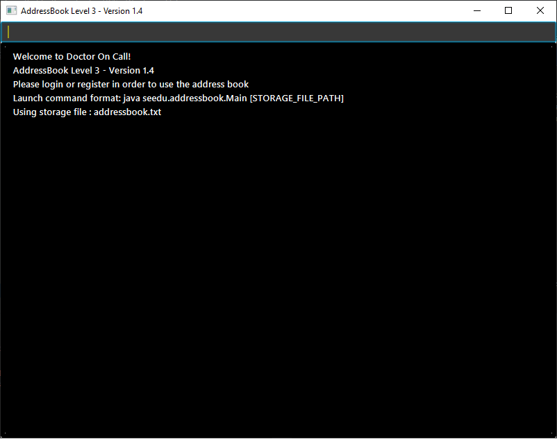

-
It is a Java sample application intended for hospital doctor who has several long-term patients he has to take care of.
-
This appication was developed by team T11-2 of CS2113T in National University of Singapore
Useful Links
Acknowledgements
This application is morphed from AddressBook-Level3 project project created by SE-EDU initiative at https://github.com/se-edu/
Some parts of this sample application was inspired by the excellent Java FX tutorial by Marco Jakob